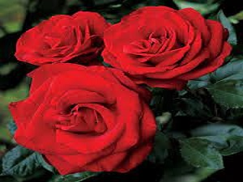

About Rose :
A rose is a woody perennial flowering plant of the genus Rosa, in the family Rosaceae, or the flower it bears.[1] There are over three hundred species and tens of thousands of cultivars.[1] They form a group of plants that can be erect shrubs, climbing, or trailing, with stems that are often armed with sharp prickles.[1] Flowers vary in size and shape and are usually large and showy, in colours ranging from white through yellows and reds.[1] Most species are native to Asia, with smaller numbers native to Europe, North America, and northwestern Africa.[1] Species, cultivars and hybrids are all widely grown for their beauty and often are fragrant. Roses have acquired cultural significance in many societies.[1] Rose plants range in size from compact, miniature roses, to climbers that can reach seven meters in height.[1] Different species hybridize easily, and this has been used in the development of the wide range of garden roses.[1]
The leaves are borne alternately on the stem. In most species they are 5 to 15 centimetres (2.0 to 5.9 in) long, pinnate, with (3–) 5–9 (–13) leaflets and basal stipules; the leaflets usually have a serrated margin, and often a few small prickles on the underside of the stem. Most roses are deciduous but a few (particularly from Southeast Asia) are evergreen or nearly so.
The flowers of most species have five petals, with the exception of Rosa sericea, which usually has only four. Each petal is divided into two distinct lobes and is usually white or pink, though in a few species yellow or red. Beneath the petals are five sepals (or in the case of some Rosa sericea, four). These may be long enough to be visible when viewed from above and appear as green points alternating with the rounded petals. There are multiple superior ovaries that develop into achenes.[3] Roses are insect-pollinated in nature.
The aggregate fruit of the rose is a berry-like structure called a rose hip. Many of the domestic cultivars do not produce hips, as the flowers are so tightly petalled that they do not provide access for pollination. The hips of most species are red, but a few (e.g. Rosa pimpinellifolia) have dark purple to black hips. Each hip comprises an outer fleshy layer, the hypanthium, which contains 5–160 "seeds" (technically dry single-seeded fruits called achenes) embedded in a matrix of fine, but stiff, hairs. Rose hips of some species, especially the dog rose (Rosa canina) and rugosa rose (Rosa rugosa), are very rich in vitamin C, among the richest sources of any plant. The hips are eaten by fruit-eating birds such as thrushes and waxwings, which then disperse the seeds in their droppings. Some birds, particularly finches, also eat the seeds.
The genus Rosa is subdivided into four subgenera: Hulthemia (formerly Simplicifoliae, meaning "with single leaves") containing two species from southwest Asia, Rosa persica and Rosa berberifolia, which are the only roses without compound leaves or stipules. Hesperrhodos (from the Greek for "western rose") contains Rosa minutifolia and Rosa stellata, from North America. Platyrhodon (from the Greek for "flaky rose", referring to flaky bark) with one species from east Asia, Rosa roxburghii (also known as the chestnut rose). Rosa (the type subgenus, sometimes incorrectly called Eurosa) containing all the other roses. This subgenus is subdivided into 11 sections. Banksianae – white and yellow flowered roses from China. Bracteatae – three species, two from China and one from India. Caninae – pink and white flowered species from Asia, Europe and North Africa. Carolinae – white, pink, and bright pink flowered species all from North America. Chinensis – white, pink, yellow, red and mixed-colour roses from China and Burma. Gallicanae – pink to crimson and striped flowered roses from western Asia and Europe. Gymnocarpae – one species in western North America (Rosa gymnocarpa), others in east Asia. Laevigatae – a single white flowered species from China. Pimpinellifoliae – white, pink, bright yellow, mauve and striped roses from Asia and Europe. Rosa (syn. sect. Cinnamomeae) – white, pink, lilac, mulberry and red roses from everywhere but North Africa. Synstylae – white, pink, and crimson flowered roses from all areas.